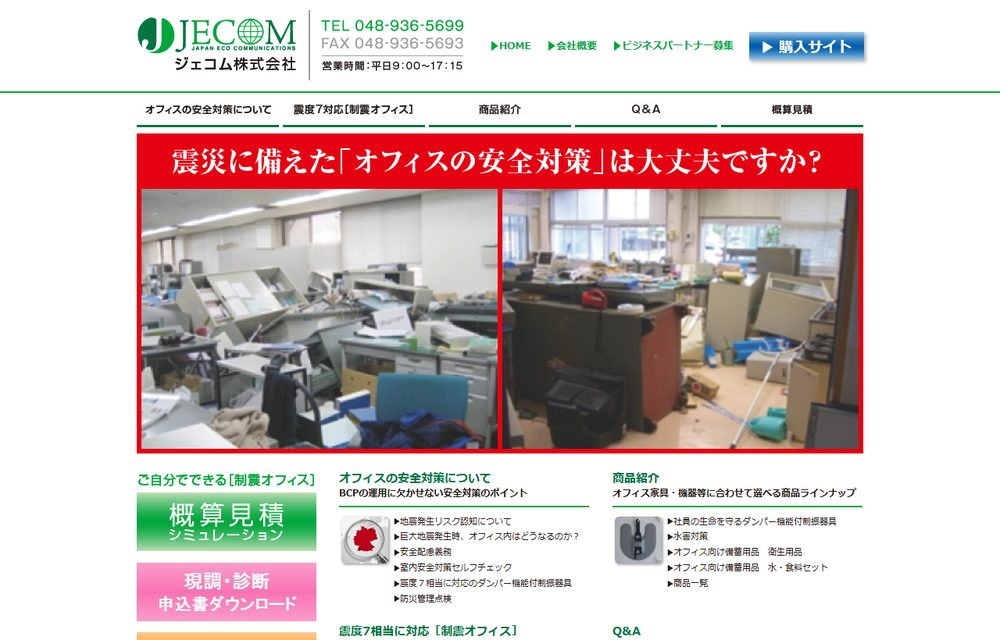
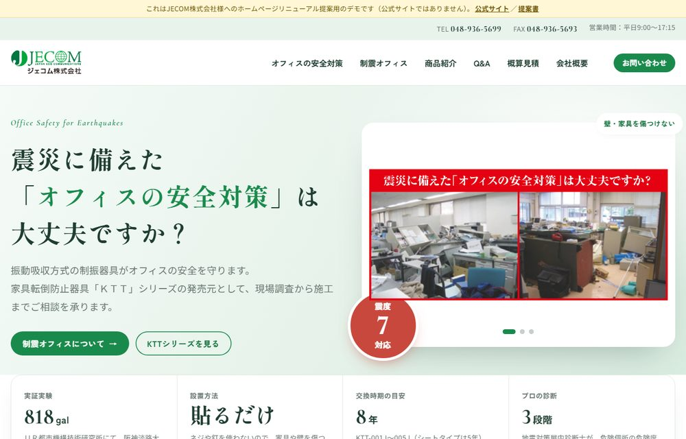
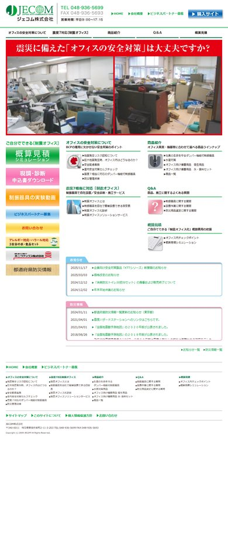
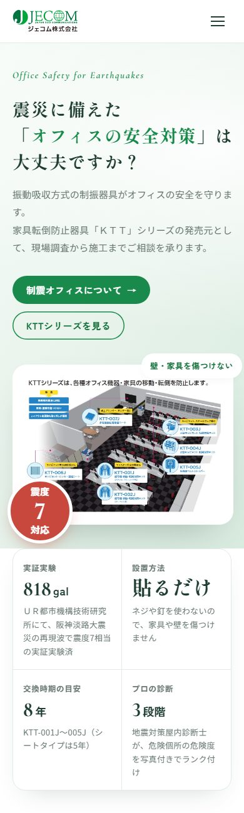
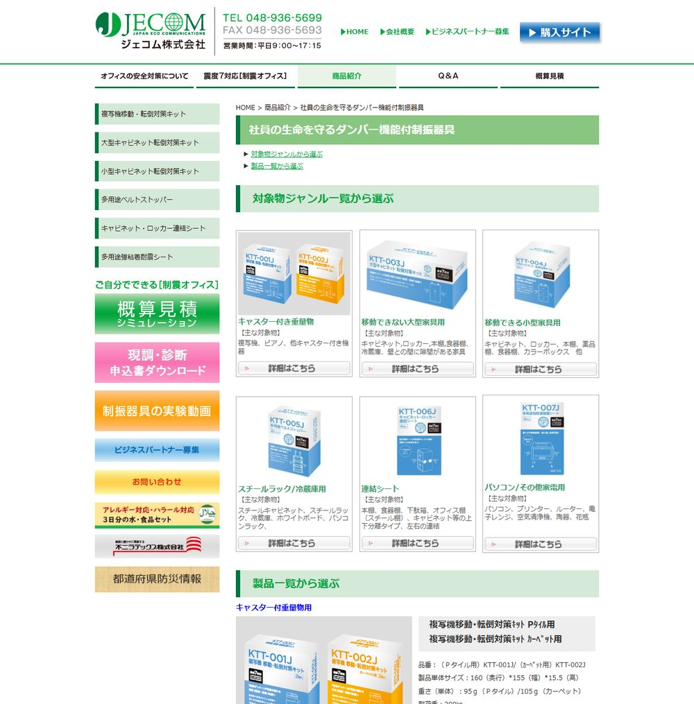
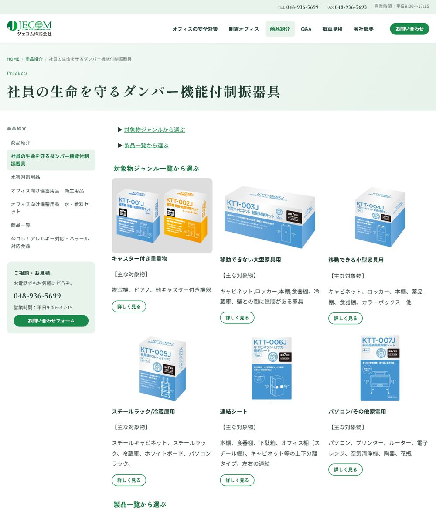

JECOM株式会社 代表取締役 三木 泰作 様
Website Renewal Proposal「震度7でも倒れないオフィス」を届ける会社に、ふさわしい“顔”を。
現行サイトの課題整理と、実際に動くデモサイトをお持ちしました。
KTTシリーズの性能（震度7相当・818galの実証実験）やプロの診断サービスなど、御社の強みは現行サイトにしっかり書かれています。ただ、見た目の古さ、スマホ非対応、古い情報やリンク切れのために、その強みが伝わりにくい状態です。
今回、現行サイトに載っている情報は一つ残らず引き継いだまま、デザインと使いやすさを作り直したデモサイトを用意しました。
ページには、スクロールに合わせて見出しや写真が現れる動きを付けています。トップページでは、写真が地震のように揺れたあと、ダンパーが効いたようにスッと止まります。「揺れても倒れない」という御社の製品を、開いた瞬間に感じていただけるようにしました。






現行サイトを全ページ確認して見つかった課題です。
スマホ表示用の設定（viewport）がなく、パソコン用の画面がそのまま縮小されて表示されます。文字やボタンが小さく、拡大しないと読めず、押し間違いも起きやすい状態です。いまは、担当者の方が最初にスマホで調べることも多いため、ここで離脱されている可能性があります。
デモでは：全ページがスマホ・タブレットの画面幅に合わせて表示されます。電話番号はタップで発信でき、メニューはスマホ用の開閉式です。
デモでは：ロゴマークの緑を基調に、すっきりしたデザインにしました。画像の中の文字（電話・営業時間・流れの図など）は普通の文字にしています。偽サイトの注意喚起はトップページに常に出しています。
デモでは：終了した見積シミュレーションのバナーとつながらないブログへのリンクは外しました。それ以外の情報の中身は勝手に変えず、確認が必要な箇所に黄色のマーカーを引いています。内容をご確認いただければ、本番で正しい表記に直します。
デモでは：サイト内のリンク切れは、行き先がはっきりしているものは正しいページへつなぎ、行き先がないものはリンクを外しました。「商品特長」の移動リンクと「7年保存クッキー3日分セット」のリンク先も正しく直しています。デモ内のリンク切れは0件です（自治体のリンクは、本番でURLを調べ直すか、掲載方法を見直すかをご相談したいです）。
デモでは、次の明らかな誤字だけを直しています（意味が変わる修正はしていません）。
| ページ | 現行 | デモ |
|---|---|---|
| オフィスの安全対策 ほか | 再来間隔が数博年オーダー | 数百年オーダー |
| 室内安全対策セルフチェック | 出展：東京消防庁／下記出展元 | 出典 |
| 制振器具の実験動画 | （出展） | （出典） |
| 安全配慮義務 | 表の見出し「請求額」が2列 | 2列目を「結果」に |
| KTT-003J／004J | 重量150lgまで | 150kgまで |
| KTT-003J／004J／005J | オフレイン樹脂壁紙 | オレフィン樹脂壁紙 |
| KTT-003J | 先着剤と壁との間 | 接着剤と壁との間 |
| Q&A | 移動・転倒防止対策キッド | キット |
| 概算見積／チェックポイント | 適切な器具を選びが重要です | 適切な器具選びが重要です |
| 概算見積／チェックポイント | 参考にすることできます | 参考にすることができます |
| 企業理念 | 少数先鋭 | 少数精鋭 |
| 今コレ！ | Completeⅾ（特殊文字） | Completed |
| お知らせ | メンテナンス終了のおお知らせ／今後との変わらぬ／お願申し上げます／お願致します | お知らせ／今後とも変わらぬ／お願い申し上げます／お願い致します |
このほか、KTT-001J/002Jの「車両直径100ｍｍ以下」は「車輪直径」の誤りの可能性があるため、黄色マーカーでご確認をお願いしています。
デモでは：余計なプログラムは使わず、軽く作り直しています。
トップに「818gal（阪神淡路大震災の再現波）」「貼るだけ」「交換目安8年」「危険度3段階の診断」を並べ、ひと目で製品の信頼性が伝わるようにしました。
対象物と耐荷重を添えて一覧にし、自社のどの家具にどれが合うか、すぐに選べるようにしました。
画像だった流れの図を文字にして、2つの導入方法を横並びで比べられるようにしました。
5つのカテゴリ＋会社概要のメニューにまとめ、各ページの横には同じカテゴリのページ一覧を置きました。
全ページの下に、電話番号・お問い合わせ・申込書ダウンロード・実験動画などの導線を置きました。
現行と同じアドレスで作っているので（お知らせ一覧のみ形式が変わります）、検索順位やブックマーク、印刷物のQRコードがそのまま使えます。
現行と同じく、トップの写真は自動で切り替わるスライドショーです（現行のスライド画像も使用）。商品ページの写真も自動で切り替わります。
現行の色分けを引き継ぎ、申込書・実験動画・パートナー募集・お問い合わせなどを、色と写真で見分けられるバナーにしました。
施工前→施工後の写真と、実験動画をトップページで見られるようにしました。
トップのお知らせ・防災情報は現行と同じく全件をスクロールで見られます。一覧ページは見出しを押すと本文が開き、トップから個別の記事へ直接移動できます。
現行の文章・写真・動画・PDF・フォームの項目はすべて同じページに載せています（機械で照合済み）。
デザインの方向性と、上記の確認事項についてご意見をいただきます。
黄色マーカー箇所の修正、リンクの整理、追加したい情報を反映します。
フォームの送信設定、更新の仕組み、サーバーの設定を行います。
同じURLで切り替えます。公開後は検索の状況も確認します。
費用・スケジュール：（別途ご相談）